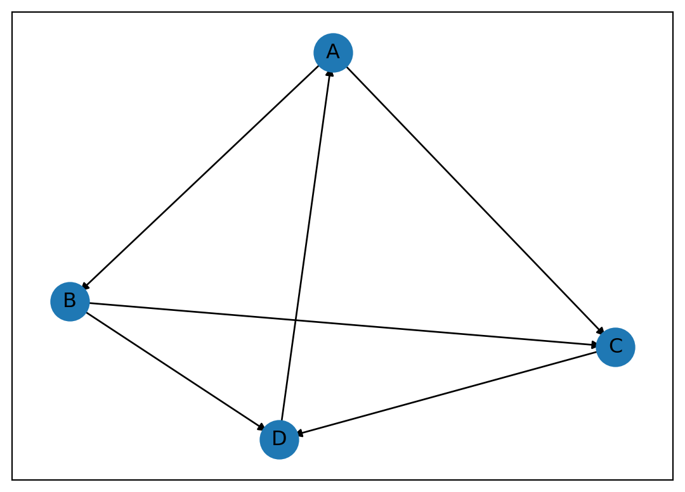
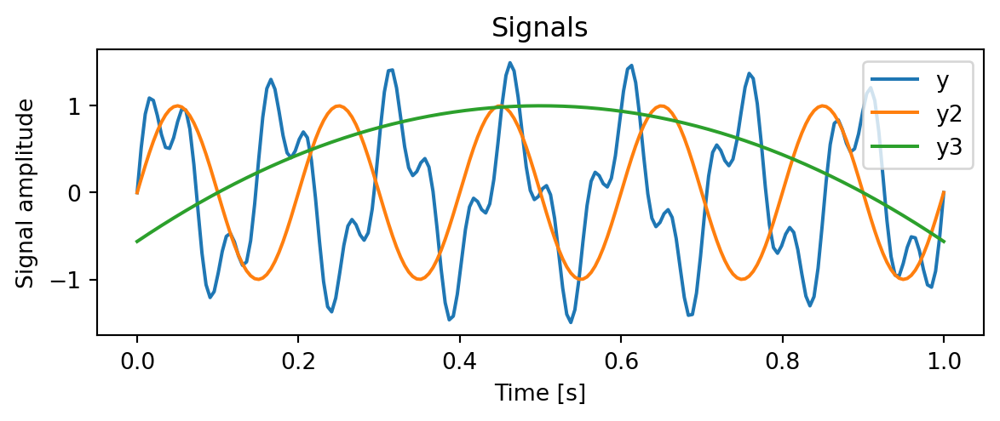
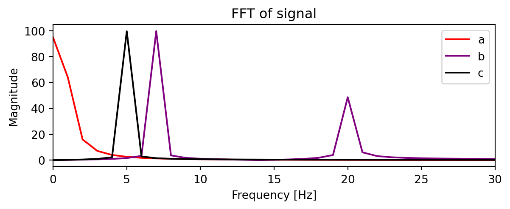

\(\displaystyle \left[\begin{matrix}0\\2 x_{k0} - x_{k1} - x_{k2} + 3\\0\end{matrix}\right]\)
Practice Final Exam Solutions
1
A transition matrix A consists of only real entries. It has one real eigenvalue \(\lambda_1 = a_1\) and two complex eigenvalues \(\lambda_2 = a_2 + b_2 \text{i}, \lambda_3 = a_2 - b_2 \text{i}\), so that \(\lambda_2\) is the complex conjugate of \(\lambda_3\): \(\lambda_2=\overline{\lambda_3}\). It has corresponding eigenvectors \(\mathbf{v_1}, \mathbf{v_2}, \mathbf{v_3}\), where the entries in \(\mathbf{v_1}\) are real and the entries in \(\mathbf{v_2}\) are the complex conjugates of the entries of \(\mathbf{v_3}\).
(For matrices with all real entries, complex eigenvalues will always come in complex conjugate pairs, and their eigenvectors will always also be complex conguate pairs.)
- Suppose the initial population is given by \(\mathbf{x}=\begin{bmatrix} x_{1} \\ x_2 \\ x_3 \end{bmatrix}\), where \(x_1,x_2,x_3\) are real numbers. The projection of the initial population onto the eigenvectors is given by \(\mathbf{x}=c_1 \mathbf{v_1} + c_2 \mathbf{v_2} + c_3 \mathbf{v_3}\).
Using the fact that \(v_2\) and \(v_3\) are complex conjugates, show that \(c_2\) and \(c_3\) are also complex conjugates.
In terms of the eigenvalues and eigenvectors, what will be the population distribution after \(k\) iterations?
Using your results from the previous two parts, show that the population at time \(k\) will always have real entries.
(You may find it helpful to know that for complex scalars \(d,g\), \(\overline{dg}=\overline{d}\times\overline{g}\), and \(\overline{d^n}= \overline{d}^n\).)
Argue that you could have gotten the same result as (c) but just using the fact that the matrix \(A\) has only real entries.
Suppose \(|\lambda_1|>|\lambda_2|=|\lambda_3|\). Estimate \(\lim_{k\to\infty} \mathbf{x_k}\) for a random initial population \(\mathbf{x_0}\), for the cases where \(\lambda_1>1\), \(\lambda_1=1\), and \(\lambda_1<1\).
- The projection onto \(\mathbf{v_2}\) is given by \(\mathbf{x} \cdot \mathbf{v_2} = x[1]v_2[1] + x[2]v_2[2] + x[3]v_2[3]\). Since \(v_2\) is a complex conjugate of \(v_3\), we have that \(v_2[2] = \overline{v_3[2]}\) and \(v_2[3] = \overline{v_3[3]}\).
Then the projection onto \(\mathbf{v_2}\) is given by \(c_2=x[1]v_2[1] + x[2]v_2[2] + x[3]v_2[3] = x[1]\overline{v_3[1]} + x[2]\overline{v_3[2}] + x[3]\overline{v_3[3]} = \overline{c_3}\).
The population at time \(k\) is given by \(\mathbf{x_k}=A^k x_0 = c_1 \lambda_1^k \mathbf{v_1} + c_2 \lambda_2^k \mathbf{v_2} + c_3 \lambda_3^k \mathbf{v_3}\).
The first entry of \(\mathbf{x_k}\) is given by
\[ \begin{aligned} x_k[1]&=c_1 \lambda_1^k v_1[1] + c_2 \lambda_2^k v_2[1] + c_3 \lambda_3^k v_3[1] \\ &=c_1 \lambda_1^k v_1[1] + c_2 \lambda_2^k v_2[1] + \overline{c_2} \overline{\lambda_2^k} \overline{v_2[1]} \\ &=c_1 \lambda_1^k v_1[1] + c_2 \lambda_2^k v_2[1] + \overline{c_2\lambda_2^k v_2[1]} \\ \end{aligned} \]
A number plus its complex conjugate is always real. Therefore, \(x_k[1]\) is real. The same logic holds for \(x_k[2]\) and \(x_k[3]\), so the population at time \(k\) will always have real entries.
Since the matrix \(A\) has only real entries, all of its powers will also have only real entries. Therefore, the population at time \(k\) will always have real entries.
If \(|\lambda_1|>|\lambda_2|=|\lambda_3|\), then the population at time \(k\) will be dominated by the term \(c_1 \lambda_1^k \mathbf{v_1}\). If \(\lambda_1>1\), then the population will grow exponentially. If \(\lambda_1=1\), then the population will stay constant and will approach \(c_1 \mathbf{v_1}\). If \(\lambda_1<1\), then the population will decay exponentially.
2
Convert this difference equation into matrix–vector form. Then, using the matrix, from a starting point of \(y_[0]=y_[1]=2\), compute \(y_2\) and \(y_3\).
\(y_{k+2} + y_{k+1} - 2y_{k} = 3\)
We solve the equation above for \(y_{k+2}\) to get \(y_{k+2} = 2y_{k} - y_{k+1} + 3\).
Make a vector of the unknowns: \(x_k = [y_{k}, y_{k+1},1]^T\). Then we have that \(x_{k+1}=[y_{k+1},y_{k+2},1]^T\).
We can now write three equations in terms of the vector \(x_k\) and \(x_{k+1}\):
\[ \begin{aligned} x_{k+1}[1] &= x_{k}[2] \\ x_{k+1}[2] &= 2x_{k}[1] - x_{k}[2] + 3x_{k}[3] \\ x_{k+1}[3] &= x_{k}[3] \end{aligned} \]
Then the equation can be written as in the form \(Ax_{k} = x_{k+1}\) where \(A\) is a matrix given by
\[ A = \begin{bmatrix} 0 & 1 & 0 \\ 2 & -1 & 3 \\ 0 & 0 & 1 \end{bmatrix} \]
Check using sympy:
It works!
Now set up the initial conditions:
\(\displaystyle \left[\begin{matrix}2\\5\\1\end{matrix}\right]\)
Check this result: this tells us that \(y_2 = 5\) and that \(y_1=2\). We still have \(y_0=2\). Plugging this into the original equation,
\(y_{k+2} + y_{k+1} - 2y_{k} = 5+2-2(2)=3\). It worked!
3
A directed graph has vertices labeled \(A\), \(B\), \(C\), and \(D\). The edges are given by the following incidence matrix B:
\(\displaystyle B = \left[\begin{matrix}-1 & -1 & 0 & 0 & 0 & 1\\1 & 0 & -1 & -1 & 0 & 0\\0 & 1 & 1 & 0 & -1 & 0\\0 & 0 & 0 & 1 & 1 & -1\end{matrix}\right]\)
Find the adjacency matrix \(A\) for the graph.
Draw the graph.
Describe how you could find the number of paths of length \(k\) between each pair of vertices using the adjacency matrix \(A\).
If you calculate the matrix \(A\) + \(A^2\), what does the sum of the entries in the corresponding row tell you about the graph?
Let \(\mathbf{v}\) be a row vector representing a subset of the edges in the graph. For example, the subset of edges given by the vector \(\mathbf{v} = [1, 0, 1, 0, 0, 1]\) would correspond to the first, third, and sixth edges.
Write an equation which will be satisfied whenever the subset of edges represented by \(\mathbf{v}\) forms a loop in the graph.
- Describe two algorithms for ranking the importance of the vertices in a graph. (One or more of these algorithms may be based on prior parts of this problem.)
\(\displaystyle \left[\begin{matrix}0 & 1 & 1 & 0\\0 & 0 & 1 & 1\\0 & 0 & 0 & 1\\1 & 0 & 0 & 0\end{matrix}\right]\)

The number of paths of length \(k\) between each pair of vertices is given by the entries in the matrix \(B^k\).
The sum of the entries in the corresponding row of the matrix \(A + A^2\) gives the power of each vertex. In other words, it gives the number of paths of length 1 or 2 originating at each vertex.
A loop in the graph is a subset of edges that form a closed path. A closed path is a path that starts and ends at the same vertex. Therefore, a subset of edges forms a loop if the multiple of the incidence matrix \(B\) and the vector \(\mathbf{v}\) is equal to zero. In other words, the subset of edges represented by \(\mathbf{v}\) forms a loop if \(\mathbf{v}B^T = 0\), or equivalently if \(B \mathbf{v^T}=0\). These definitions work if B has one column for each edge; if B has one row for each edge, then the equation is \(B^T \mathbf{v^T}=0\).
Two algorithms for ranking the importance of the vertices in a graph are the PageRank algorithm the power method.
4
The system of equations
\[ \begin{aligned} x_{1}+x_{2} & =2 \\ x_{3}+x_{4} & =1 \\ 2 x_{1}+4 x_{2}+2 x_{4} & =6 \end{aligned} \]
has coefficient matrix \(A\) and right hand side \(\mathbf{b}\) such that the row-reduced echelon form of \([A \mid \mathbf{b}]\) is
\[ \left[\begin{array}{ccccc:c}1 & 0 & 0 & -1 & \mid & 1 \\ 0 & 1 & 0 & 1 & | & 1 \\ 0 & 0 & 1 & 1 & | & 1\end{array}\right] \]
Use this information to answer the following:
Find a basis for the null space of \(A\).
Find the form of a general solution of the system \(A \mathbf{x}=\mathbf{b}\).
Find the rank of \(A\).
No matter what the right hand side of \(\mathbf{b}\) is, this system has solutions. In terms of rank, why do we know this?
- To find a basis for the null space of \(A\), we solve the equation \(A\mathbf{x} = \mathbf{0}\).
We know that \(x_4\) is a free variable, so we can write the solution in terms of \(x_4\):
\[ \begin{aligned} x_1 &= x_4 \\ x_2 &= - x_4 \\ x_3 &= - x_4 \\ x_4 &= x_4 \end{aligned} \]
So the basis for the nullspace of \(A\) is simply the vector \(\begin{bmatrix} 1 \\ -1 \\ -1 \\ 1 \end{bmatrix}\).
Checking using sympy:
- The general solution will be a particular solution plus a linear combination of the basis for the nullspace of \(A\).
To find a particular solution, we can set \(x_4 = 0\) and solve the system. Then we have that \(x_1 = x_2 = x_3 = 1\). Therefore, a particular solution is \(\begin{bmatrix} 1 \\ 1 \\ 1 \\ 0 \end{bmatrix}\).
The general solution is then given by \(\begin{bmatrix} 1 \\ 1 \\ 1 \\ 0 \end{bmatrix} + x_4 \begin{bmatrix} 1 \\ -1 \\ -1 \\ 1 \end{bmatrix}\).
The rank of \(A\) is the number of pivot columns in the row-reduced echelon form of \(A\). In this case, the rank of \(A\) is 3.
The rank of \(A\) is less than the number of columns in \(A\). Therefore, the system will always have solutions.
5
You are given a matrix \(A\):
\(\displaystyle \left[\begin{matrix}0 & 1\\1 & 0\\1 & 1\end{matrix}\right]\)
The eigenvalues of \(AA^T\) are \(\lambda_1 = 3, \lambda_2 = 1, \lambda_3 = 0\).
Find the eigenvalues of \(AA^T\).
Find the eigenvectors of \(A^TA\) and \(AA^T\). Use the facts below and explain your reasoning.
Find the singular value decomposition of \(A\).
Using the SVD, calculate \(A^+\), the pseudoinverse of \(A\). Use this to solve the least squares problem \(A\mathbf{x} = \mathbf{b}\), where \(\mathbf{b} = [1, 4,2]^T\).
Using the SVD, calculate \(A^k \mathbf{x}\) for \(k=3\) and \(\mathbf{x} = [-2, 2, 0]^T\).
Here are some facts which may be helpful:
\(\displaystyle \left[\begin{matrix}1 & 0 & 1\\0 & 1 & 1\\1 & 1 & 2\end{matrix}\right]\left[\begin{matrix}-1\\-1\\1\end{matrix}\right]=\left[\begin{matrix}0\\0\\0\end{matrix}\right]\)
\(\displaystyle \left[\begin{matrix}-2 & 0 & 1\\0 & -2 & 1\\1 & 1 & -1\end{matrix}\right]\left[\begin{matrix}\frac{1}{2}\\\frac{1}{2}\\1\end{matrix}\right]=\left[\begin{matrix}0\\0\\0\end{matrix}\right]\)
\(\displaystyle \left[\begin{matrix}0 & 0 & 1\\0 & 0 & 1\\1 & 1 & 1\end{matrix}\right]\left[\begin{matrix}-1\\1\\0\end{matrix}\right]=\left[\begin{matrix}0\\0\\0\end{matrix}\right]\)
\(\displaystyle \left[\begin{matrix}1 & 1\\1 & 1\end{matrix}\right]\left[\begin{matrix}-1\\1\end{matrix}\right]=\left[\begin{matrix}0\\0\end{matrix}\right]\)
\(\displaystyle \left[\begin{matrix}-1 & 1\\1 & -1\end{matrix}\right]\left[\begin{matrix}1\\1\end{matrix}\right]=\left[\begin{matrix}0\\0\end{matrix}\right]\)
- We first find the characteristic polynomial of \(AA^T\): we find \(\text{det}(AA^T - \lambda I)\) and set it equal to zero.
\(\displaystyle \lambda^{2} - 4 \lambda + 3=0\)
We try the three eigenvalues given in the question: 0, 1, and 3. We find that 0 is not an eigenvalue, but that 1 and 3 satisfy the equation. Therefore, the eigenvalues of \(AA^T\) are \(\lambda_1 = 3, \lambda_2 = 1\).
- The eigenvectors of \(AA^T\) are given by the nullspace of \(AA^T - \lambda I\). We can find the eigenvectors by solving the equation \((AA^T - \lambda I)v = 0\). These are what are given to us in the question, so the eigenvectors are
\(\displaystyle \left[\begin{matrix}-1\\-1\\1\end{matrix}\right]\)
\(\displaystyle \left[\begin{matrix}-1\\1\\0\end{matrix}\right]\)
\(\displaystyle \left[\begin{matrix}\frac{1}{2}\\\frac{1}{2}\\1\end{matrix}\right]\)
The eigenvectors of \(A^TA\) are given by the nullspace of \(A^TA - \lambda I\). We can find the eigenvectors by solving the equation \((A^TA - \lambda I)u = 0\). These are what are given to us in the question, so the eigenvectors are
\(\displaystyle \left[\begin{matrix}-1\\1\end{matrix}\right]\)
\(\displaystyle \left[\begin{matrix}1\\1\end{matrix}\right]\)
The singular value decomposition of \(A\) is given by \(A = U\Sigma V^T\), where \(U\) is the matrix of eigenvectors of \(A^TA\), \(V\) is the matrix of eigenvectors of \(AA^T\), and \(\Sigma\) is the diagonal matrix of the square roots of the eigenvalues of \(A^TA\).
The pseudoinverse of \(A\) is given by \(A^+ = V\Sigma^+ U^T\), where \(\Sigma^+\) is the diagonal matrix of the reciprocals of the non-zero elements of \(\Sigma\). We can use this to solve the least squares problem \(A\mathbf{x} = \mathbf{b}\).
6
For the matrix \(A = \begin{bmatrix} 9 & 8 \\ -6 & -5 \end{bmatrix}\), find the eigenvalues and eigenvectors.
Using these results, find the matrix \(P\) such that \(P^{-1}AP\) is a diagonal matrix.
(Note: for a 2x2 matrix \(\begin{bmatrix}a&b\\c&d\end{bmatrix}\), you can calculate the inverse as \(\frac{1}{ad-bc}\begin{bmatrix} d & -b \\ -c & a \end{bmatrix}\).)
Diagonalize the matrix \(A^4+2A^2-3I\). (It’s fine to leave exponents in the answer, e.g. \(5^{6}\).)
Find the nullspace of the matrix \(A^4+2A^2-3I\).
P =
D = \(\displaystyle \left[\begin{matrix}-1 & -4\\1 & 3\end{matrix}\right]\)
\(\displaystyle \left[\begin{matrix}1 & 0\\0 & 3\end{matrix}\right]\)
We can diagonalize \(A^4+2A^2-3I\) by noting that we find \(A^4\) by taking the 4th power of the diagonal terms in \(D\), and similarly for \(A^2\).
We also need to write \(I\) in terms of \(P\) and \(D\). Note that \(P I P^{-1} = I\). So we can write the entire sum as \(P \left( D^4 + 2D^2 - 3I \right) P^{-1}\).
Checking in sympy:
True7
The Discrete Fourier Transform (DFT) of a sequence \(x[n]\) is given by \(X[k] = \sum_{n=0}^{N-1} x[n] e^{-i2\pi kn/N}\), where \(N\) is the length of the sequence, and where \(k\) runs from \(0\) to \(N-1\). The inverse DFT is given by \(x[n] = \frac{1}{N} \sum_{k=0}^{N-1} X[k] e^{i2\pi kn/N}\).
Find the DFT of the filter \(h[n] = [\frac{1}{3},-\frac{1}{3},\frac{1}{3},0]\).
Using this DFT, find the circular convolution of the sequences \(x[n] = [1,2,3,4]\) and \(h[n]\). Note: the DFT of \(x\) is \(X=[10,-2+2i,-2,-2-2i]\).
(Circular convolution is convolution where we assume the sequences are periodic, so that \(x[n] = x[n+N]\). It’s as if we had the long sequence \(x[n] = [\color{blue}1,2,3,4,\color{black}1,2,3,4,\color{blue}1,2,3,4,\ldots]\) to use when calculating the convolution. When we discussed convolution using the DFT in class, we were actually doing circular convolution. This matters if you want to check your results doing the convolution by hand without using the DFT.)
- From the plots below, match the signals to the correct DFTs. (Curve y3 is actually a quadratic. I have plotted only the absolute value of the DFTs. The complete DFT also includes negative frequencies, not shown here, which are the complex conjugates of the positive frequencies.)


The DFT of the filter \(h[n] = [\frac{1}{3},-\frac{1}{3},\frac{1}{3},0]\) is given by \(H[k] = \sum_{n=0}^{3} h[n] e^{-i2\pi kn/4}\) This equals \(H=[1/3, i/3, 1, -i/3]\).
The circular convolution of the sequences \(x[n] = [1,2,3,4]\) and \(h[n]\) is given by the inverse Fourier transform of the element-wise product \(X[k]H[k]\). This equals
\([10,-2+2i,-2,-2-2i]\times[1/3, i/3, 1, -i/3]=[10/3, -2/3-2/3i, -2, -2/3+2/3i]\).
The inverse transform is \([0,5,2,3]/3\).
- The DFT of signal \(y\) is \(b\), the DFT of signal \(y2\) is \(c\), and the DFT of signal \(y3\) is \(a\). We can tell because \(y2\) is a simple sin curve, so its DFT is a single peak. \(y\) appears to be a sum of two sin curves, so its DFT has two peaks. \(y3\) has many frequency components, but they are low frequency, so the DFT has a peak near 0.